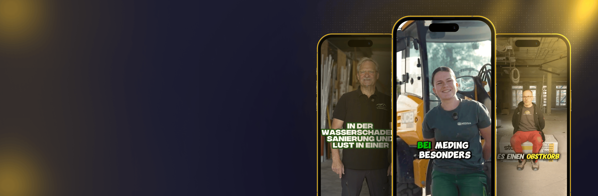

01 · Das System in fünf Zellen
Motivbasiertes Jobangebot
Die Kommunikation des Wechselmotivs entscheidet. „Flache Hierarchien“ wünscht sich jeder, trotzdem sind solche Floskeln wirkungslos. Wir finden das Motiv, das in Ihrem Betrieb wirklich stimmt, und stellen es nach vorn.
- Aus 464+ Einstellungen: was Fachkräfte wirklich bewegt
- Ein Wechselgrund, keine Aufzählung
- Formuliert für Ihre Region und Ihr Gewerk

Beispiele aus laufenden Kampagnen